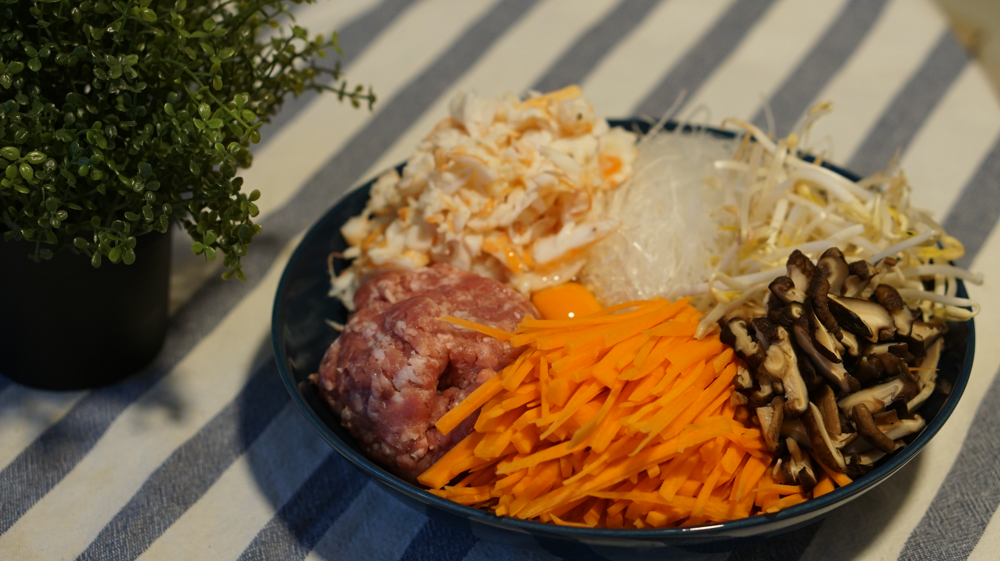
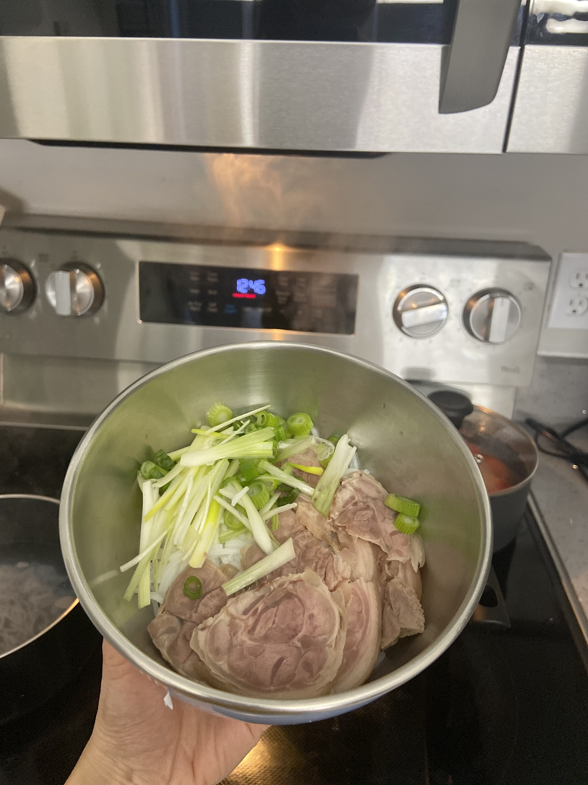
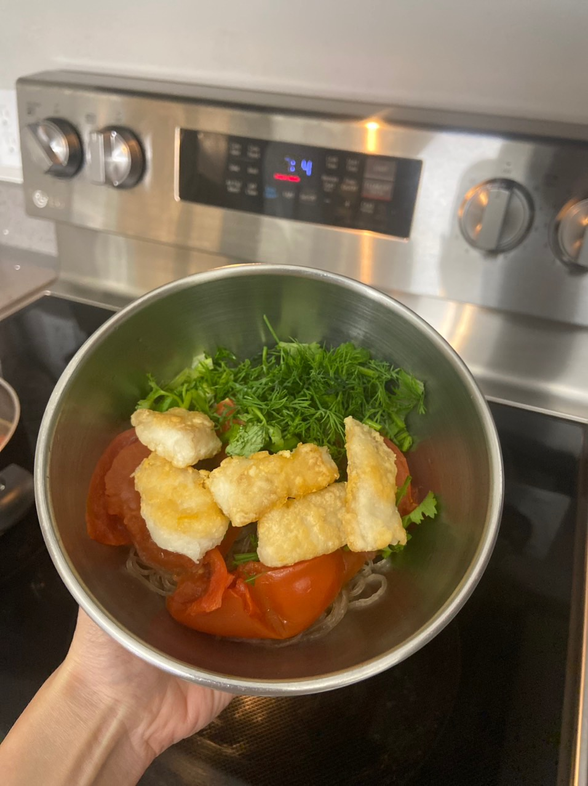

Personal
…
I’d love to travel and explore the diverse local cultures and cuisines around the world. Being in academia not only enables me to journey across the globe but also give me a chance to meet new people from various countries and cultural backgrounds. Here is an interactive map showing the footprints of my journeys thus far!
Can you perceive the aroma of food wafting from these photos? I enjoy cooking and having culinary experiences at various restaurants everywhere I travel with my closed friends. Another hobby I love is creating art in Procreate and watching time-lapse videos to see the process of how things are made. I also make time for Zumba fitness and swimming to maintain a healthy work-life balance.



